Mit «Meine Fassung» passen Sie eine fertige Einheit auf bbw-hko.ch an Ihre Klasse an. Das Original bleibt unverändert. Ihre Fassung sehen nur Sie und KT1.
Wo es geht: nur bei Einheiten im neuen Format (v4.2), zum Beispiel «Konsum verantworten (v4.2)» oder «Sich im Lehrvertrag orientieren (v4.2)».
Die Bilder zeigen meist die EFZ-Einheit «Konsum verantworten». Einige Bilder ab Schritt 4 stammen aus der EBA-Einheit «Sich im Lehrvertrag orientieren»; der Ablauf ist derselbe. Was bei EBA anders ist, steht am Schluss.
Zwei Wege:
Mit Modell: Sie schreiben, was anders werden soll. Ein Sprachmodell macht einen Vorschlag. Sie entscheiden Stück für Stück.
Selbst bearbeiten: Sie ändern einen Text direkt. Es geht nichts an ein Sprachmodell.
1 Die Leiste finden
Öffnen Sie die Einheit. Über der Vorschau des Hefts steht die Leiste Meine Fassung. Der grüne Kasten erklärt, was mit Ihren Eingaben geschieht.
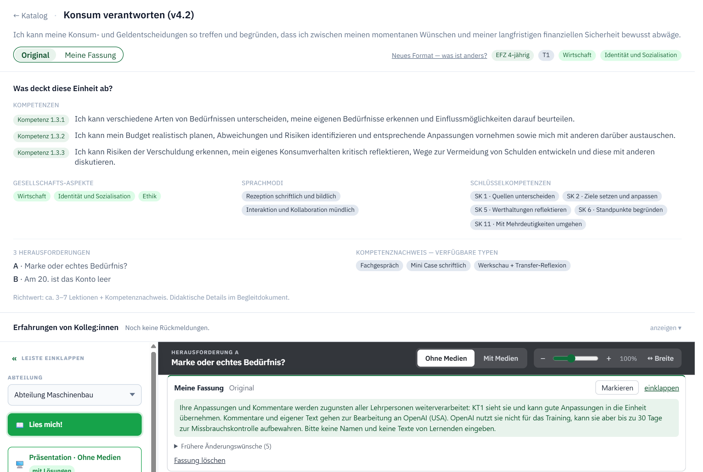
Die Leiste «Meine Fassung» über der Vorschau
2 Teile markieren
Klicken Sie auf Markieren. Alle Teile, die Sie ändern können, sind jetzt gestrichelt umrandet. Klicken Sie auf einen solchen Block.
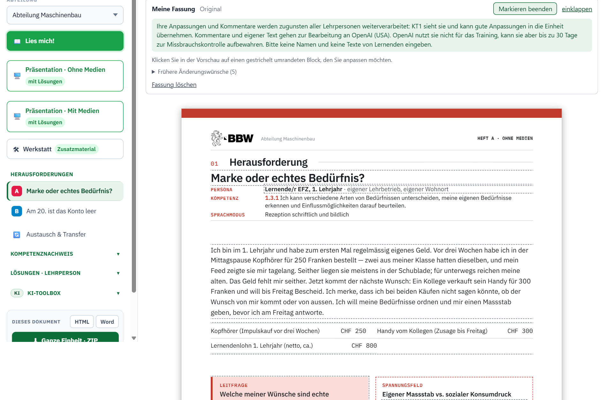
Gestrichelte Blöcke im Markiermodus
3 Auftrag wählen und Wunsch beschreiben
Es öffnet sich ein kleines Fenster. Unter Was möchten Sie tun? wählen Sie, was zum Block passt:
Selbst bearbeiten (ohne Modell)
Leitfrage umformulieren – die gespeicherte Lösung bleibt und muss weiter passen
Situation umformulieren – Person, Betrieb und Fall; Lösungen und Beispiel ziehen mit
Handlungsprodukt ändern – Schritte, Kriterien und Beispiel ziehen mit
Eigenen Text verwenden – siehe Schritt 7
Welche Aufträge erscheinen, hängt vom Block ab. Schreiben Sie unter Was soll anders werden? kurz Ihren Wunsch. Lesen Sie den Hinweis zu OpenAI. Dann Hinzufügen.
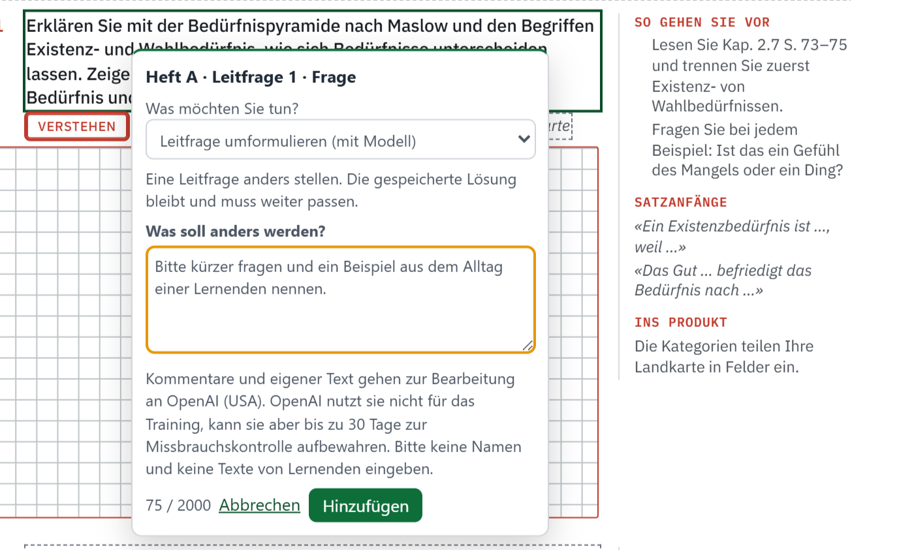
Dialog mit Auftrag, Kommentar und Hinweis zu OpenAI
4 Wünsche sammeln und abschicken
Sie können mehrere Blöcke markieren. Die Wünsche sammeln sich in der Leiste unter Änderungswünsche Heft A (bzw. Heft B). Mit entfernen streichen Sie einen Wunsch. Sind alle beisammen: Änderungswünsche Heft A abschicken.
Danach steht «Vorschlag wird erstellt …». Das dauert meist 1–3 Minuten. Lassen Sie die Seite offen.
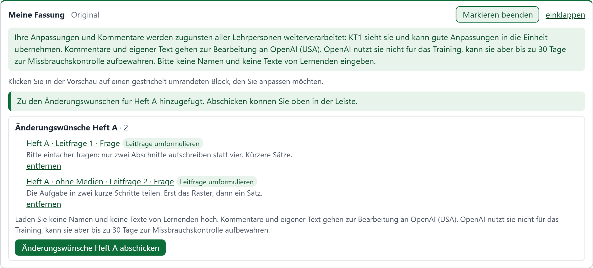
Liste der Änderungswünsche mit Knopf zum Abschicken
5 Vorschlag prüfen und speichern
Die Seite zeigt jetzt die Vorschau eines Vorschlags. Für jeden geänderten Teil steht eine kurze Begründung. Entscheiden Sie Stück für Stück: Übernehmen oder Verwerfen. Ein Klick auf den unterstrichenen Namen springt zur Stelle im Heft.
Wichtig: Übernommen ist erst, was Sie mit Entscheid speichern sichern.
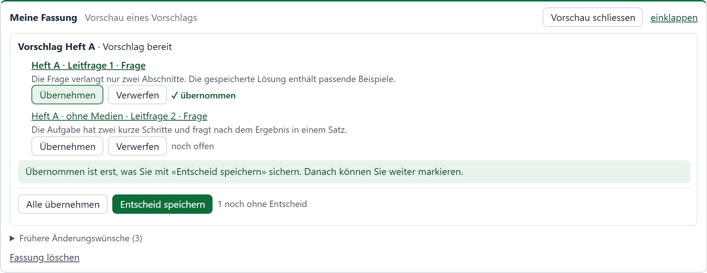
Vorschlag mit Übernehmen, Verwerfen und Entscheid speichern
Im Heft sind die vorgeschlagenen Stellen grün hinterlegt.
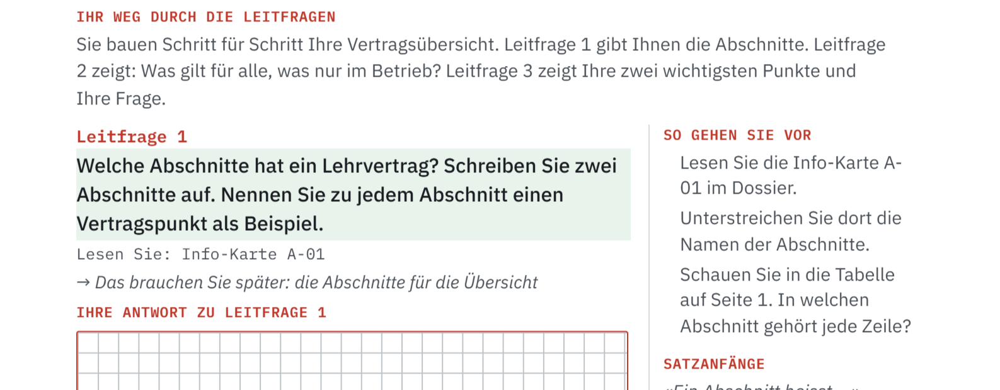
Vorgeschlagener neuer Text, grün hinterlegt im Heft
6 Selbst bearbeiten (ohne Modell)
Für kleine Änderungen brauchen Sie kein Modell. Markieren Sie den Block und wählen Sie Selbst bearbeiten (ohne Modell). Ändern Sie den Text direkt im Feld. Unten zählt der Zähler die Zeichen (z. B. «174 / 184 Zeichen»): mehr hat im Heft keinen Platz. Dann Speichern.
Passen Sie zusammenhängende Stellen (Lösungen, anderes Heft) bei Bedarf selbst an.
Zurück zum Original: Öffnen Sie denselben Block wieder mit «Selbst bearbeiten» und klicken Sie auf Original einsetzen. Nach Speichern gilt wieder das Original.
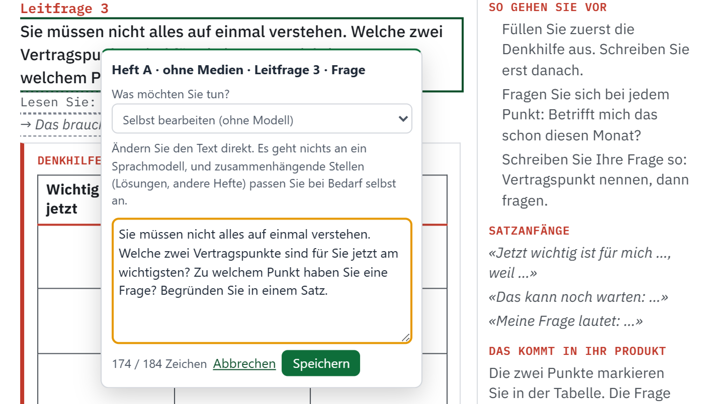
Selbst bearbeiten mit Zeichenzähler
7 Eigener Text als Grundlage
Sie möchten die Leitfragen auf einen eigenen Text stützen, z. B. einen Zeitungsartikel? Wählen Sie bei einer Leitfrage Eigenen Text verwenden. Im selben Fenster laden Sie eine Datei hoch (.docx, .pdf oder .txt, höchstens 5 MB) oder fügen den Text ein. Schreiben Sie darunter, was mit dem Text passieren soll. Dann Hinzufügen und abschicken wie in Schritt 4.
Das gilt nur für das Heft ohne Medien.
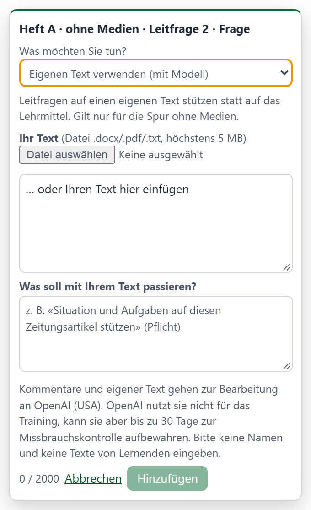
Eigenen Text verwenden: Datei oder Text und Auftrag
8 Die eigene Fassung ansehen
Oben beim Titel wechseln Sie zwischen Original und Meine Fassung. In Ihrer Fassung steht der Vermerk «angepasst, nicht von KT1 geprüft». Er erscheint auch in den Dokumenten.
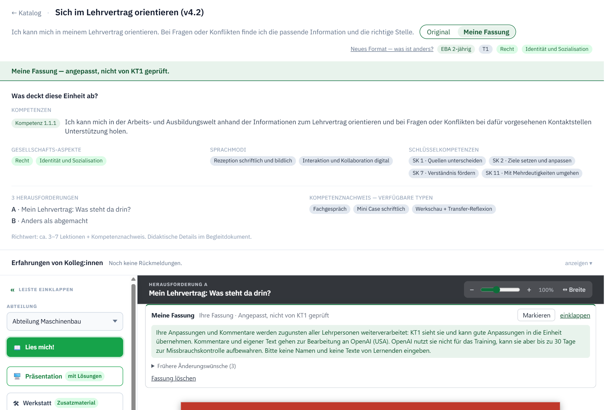
Umschalter Original / Meine Fassung mit Vermerk
9 Herunterladen
In Ihrer Fassung heisst der Knopf links unten Meine Fassung · ZIP. Er lädt die ganze Einheit mit Ihren Änderungen herunter.
Knopf «Meine Fassung · ZIP»
10 Verlauf und Fassung löschen
Unter Frühere Änderungswünsche sehen Sie alle Runden. Ein Vorschlag, den Sie noch nicht entschieden haben, öffnen Sie dort mit Vorschau.
Fassung löschen entfernt Ihre ganze Fassung mit allen Runden. Der Browser fragt nach. Das lässt sich nicht rückgängig machen. Danach sehen Sie wieder das Original.
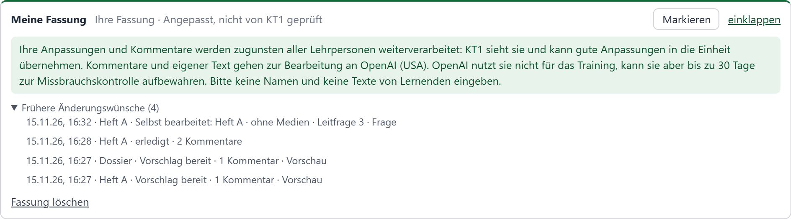
Frühere Änderungswünsche und «Fassung löschen»
EBA-Einheiten
Die Leiste steht an derselben Stelle über der Vorschau. Markieren, Abschicken, Prüfen und Speichern gehen gleich. Anders ist:
Eine Spur: Die EBA-Hefte haben keinen Umschalter «Ohne Medien / Mit Medien».
Sprache: Das Modell schreibt für EBA auf Niveau A2, mit kurzen Sätzen.
Dossier nicht markierbar: Dossier und Lese-Arbeitsblatt haben keine gestrichelten Blöcke. Ein Klick dort meldet «Diesen Teil kann man nicht anpassen». Auch «Selbst bearbeiten» geht nur in Heft A, Heft B und im Auftragsbogen.
Dossier zieht mit: Wählen Sie im Heft Situation umformulieren, Handlungsprodukt ändern oder Eigenen Text verwenden, passt das Modell das Dossier in einem eigenen Schritt an. Sie bekommen dann zwei Vorschläge: zuerst für das Heft, danach für das Dossier. Nach «Entscheid speichern» springt die Leiste zum nächsten offenen Vorschlag. Der Schritt für das Dossier zählt als eigener Aufruf zur Tagesgrenze.
Leitfrage umformulieren und Selbst bearbeiten ändern das Dossier nicht.
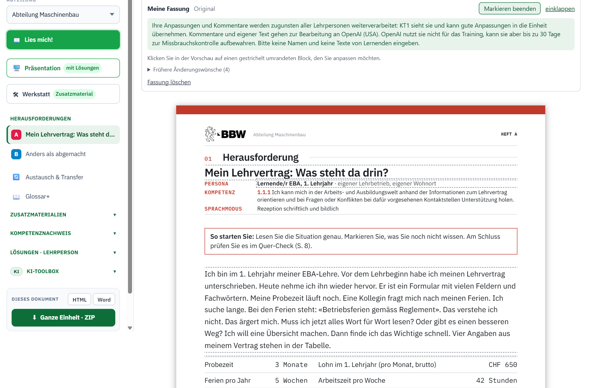
EBA: Leiste über Heft A im Markiermodus
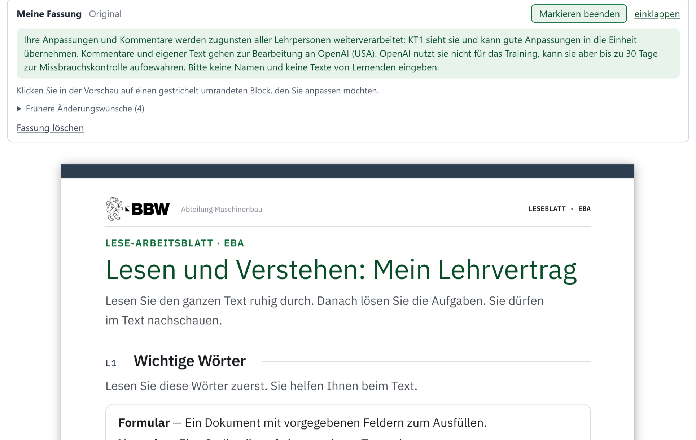
EBA: Lese-Arbeitsblatt im Markiermodus – keine wählbaren Blöcke
Gut zu wissen
Datenschutz: Kommentare und eigener Text gehen zur Bearbeitung an OpenAI (USA). OpenAI nutzt sie nicht für das Training, kann sie aber bis zu 30 Tage zur Missbrauchskontrolle aufbewahren. Keine Namen und keine Texte von Lernenden eingeben. «Selbst bearbeiten» schickt nichts an OpenAI.
KT1 liest mit: KT1 sieht Ihre Anpassungen und kann gute davon in die Einheit übernehmen.
Grenze: höchstens 20 Aufrufe des Modells pro Tag und Person.
Rückmeldung: Etwas klemmt oder ist unklar? Unten rechts auf jeder Seite: Problem melden.